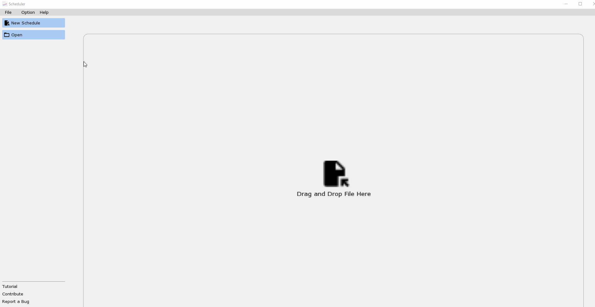
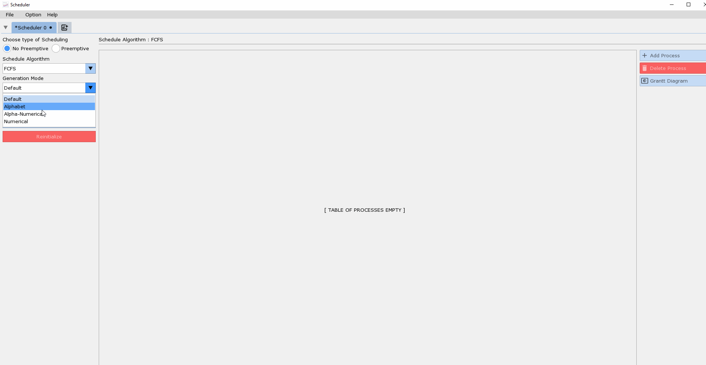
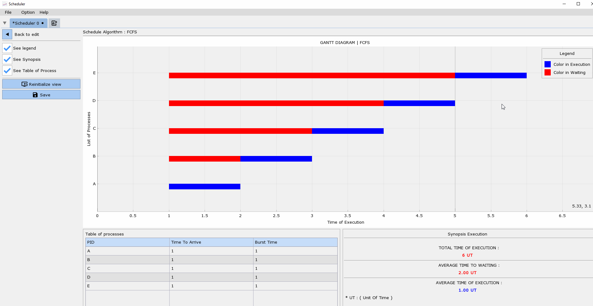

The Software to visualizing GRANT diagram of scheduling algorithm in UNIX System , for study case!
Very ease to use with trivial interface
Overview
Scheduler is a software that allow you to see with visual graph (GRANT DIAGRAMM) for Scheduling of processes in Unix system
Some feature was implemented :
- Choosing Generation Mode ( Alphabetic, Numerical, Alpha-Numeric,...)
- Major algorithm like ( Round Robin, Shortest Remaning Time First,...)
- Two Languages are available now ( French and English )
Manual
Start new scheduling
to start new scheduling you can do :

Generate table of processes
for generating table of process :

Generate Grantt Diagram

Change Color of Process

Customization
You have the possibility to switch the theme of the App ( Light or Dark)
| light | dark |
|---|---|
 |
 |